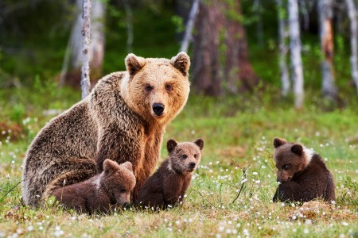

Bear Facts
Bears are found in North America, South America, Asia and Europe. The Atlas bear, a subspecies of the brown bear, was the only bear native to Africa and was distributed from Morocco to Libya. It has been extinct since about the 1970s. There are no bears in Australia or Antarctica.
The most widespread species is the brown bear, which occurs from Western Europe eastwards through Asia to the western areas of North America. Polar bears are restricted to the area of the Arctic Ocean and the American black bear is found only in North America. A single species, the Andean or spectacled bear, occurs in South America.
Bears pretty much do as they please and they live all over the world. Here are some important bear facts.
- Their scientific name is "Ursidae."
- The Polar Bear can reach speeds of up to 25 mph.
- The Giant Panda has a 20 year life span.
- 150–220 lbs (Giant panda)
- 990 lbs (Polar bear)
- 240 lbs (American black bear)
- 180–1,300 lbs (Brown bear)